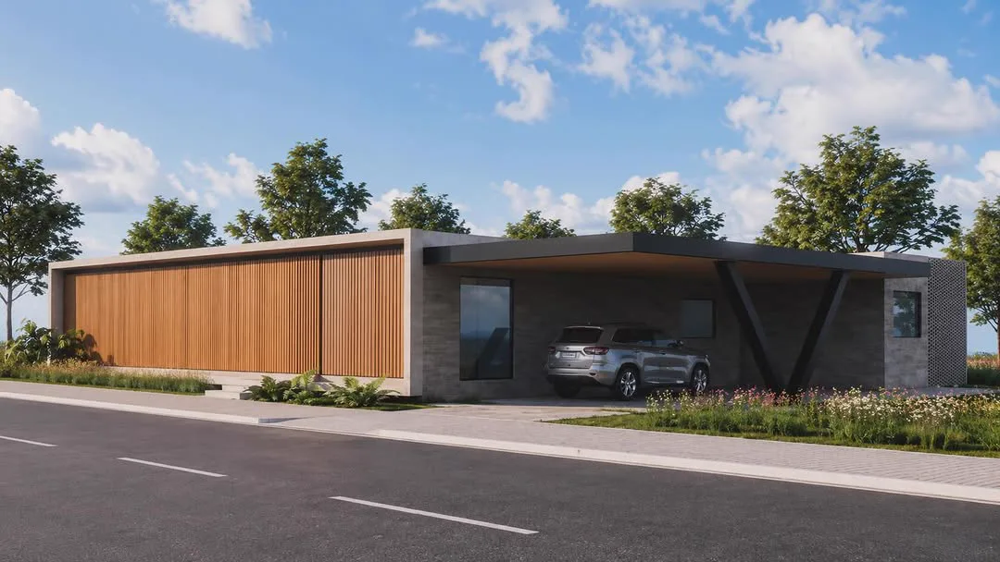

Projetoresidencial
Casas & apartamentos
Arquitetura do zero ou reforma completa, pensada para a rotina, o clima e a história de cada família. Fachadas, plantas e soluções técnicas com personalidade.
- Levantamento e estudo de viabilidade
- Estudo preliminar e anteprojeto
- Projeto legal para aprovação
- Projeto executivo e detalhamentos
- Imagens 3D realistas